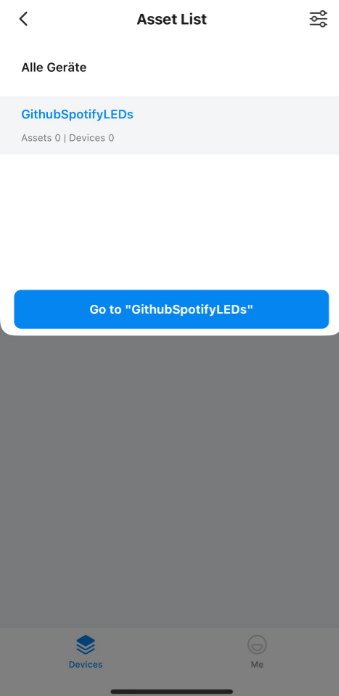

Note: The introduction was written on 21.12 2024
Before getting started, we’ll walk you through configuring your smart LED lights. First, you’ll use the app to set up and control your lights. Then, we’ll guide you through setting up your Tuya account. After that, you’ll configure Spotify and authorize it with the website. The entire process should take about 15 minutes. Good news: this setup only needs to be done ONCE per account.
The first step is to check if your LED lights are compatible with the
Tuya API. You can do this by visiting the following website and
searching for the name of your LED lights:
Smart
Life App Compatible Devices
If the name of your lights doesn’t appear, don’t worry—there’s still hope!
Next, we’ll register on the Tuya Developer platform:
Tuya
Developer Login
After registering and logging in, you should land on the main page, which might seem overwhelming at first.
First, click on Cloud in the left-hand menu, then select Development. On the right side, you’ll see a blue button labeled Create Project—click it to proceed.
When creating the project, the Name and Description are not critical. Focus on selecting the correct options:
After configuring these settings, click Ok to complete your project setup. You’ll be directed to your project dashboard, where you can find your API keys and other configurations.

We can skip all proposed APIs
Now, you’ll see your Access ID/Client ID and
Access Secret/Client Secret.
Very important! Make sure to note these down, as we
will need them for our website configuration.

Now, we come to the sketchy part. Tuya offers their API service only with a subscription.
Pros: You can claim a free month without entering
any payment information.
Cons: After one month, you’ll need to request another
trial extension, which will extend it for 6 more months. The request
process was quick for me, taking about 3-5 minutes, but I’m unsure if
this can be requested again after the 6-month period.
First, go back to Cloud under
Development, where you should now see your
project.
Click on Upgrade IoT Core Plus to proceed.
Select Trial Edition and click the Buy Now button. Nothing else is needed here.

Finally, confirm your free trial and select your project.

Enter in your project again, under Clound into
Develepment and Click on Devices,
where you’ll see a visual guide of the steps ahead.
In the bottom right corner, click on Add Devices and
select Add with Smart Industry App.
A QR code should now appear on your screen. The QR code will direct you
to the Smart Industry app, which we will need for the
next steps.

Before working with the app, we need to create an
Admin account.
Click on Show Guide for more details and select
Quick Admin Setup to proceed.

After choosing either an email or phone number, the QR code should appear.
Now, let’s create a password.
Go to 02 Build SaaS Application and reset your
password.
Make sure to note down the generated password!
In the app, the first bar will prompt you to scan the same QR code
you scanned earlier. If done correctly, your project name should be
automatically filled in.
Important! For Account and
Password, use your Admin Email and the
generated password.
In the home menu, click on Me at the bottom right, then go to Asset Management and click on +Add.
After creating any asset, return to the home screen and switch from
All Devices to the asset you just created.
Finally, click on +Add to find your smart device. Make
sure your smart device is in pairing mode.
(Note: Enabling pairing mode varies by device. Often, you need to press
and hold a specific button, such as the On/Off button,
for a longer period.)
 
After connecting your lights with the app, go back to Cloud under Development and check Devices. You should now see your active smart device, including the Device ID.
Take a deep breath!
The hardest part is behind us. The Spotify configuration is much
simpler!

Once you’ve correctly transferred everything to the website, you can now toggle your lights on and off using the switch in the top right corner.
Log in to the Spotify Developer platform at Spotify Developer Click on
your profile in the top right corner and select
Dashboard.
You should now see the following:

When creating the app, the name and
description don’t matter. The key part is to provide
the correct Redirect URIs. I’ve intentionally added
more than necessary to prevent any potential issues.
For API used, select Web API.
After creating your app, you’ll be on the home screen. Click on Settings to view your Client ID and Client Secret.

Once you’ve correctly transferred the data to Spotify, click on Home in the menu. You will be asked to confirm the connection again.
Now you’re done! Play a song and try it out yourself!